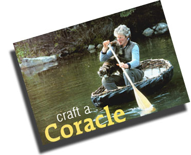
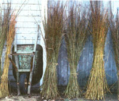
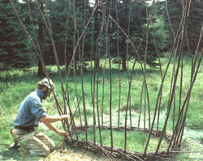
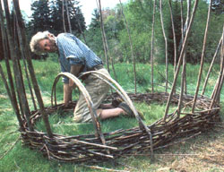
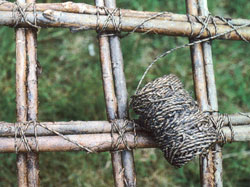
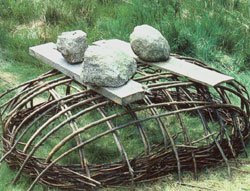
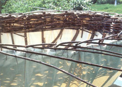
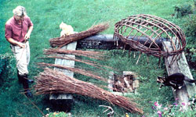
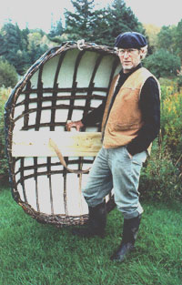
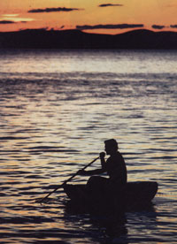

Craft A Coracle
Born of necessity, coracles have been made by people of many cultures for thousands of years.
By Stanley Joseph
April/May 2003
In 1978 I ran into a friend, Hugh Curran, at the coin-operated laundry in Ellsworth, Maine. He saw one of my handmade laundry baskets, and he remarked that it reminded him of a miniature version of the boats, or coracles, his uncle once had built in Ireland. They were used for salmon fishing on the rivers. The possibility of making such a boat, based on a basket form covered with hide or cloth, really appealed to me. Hugh wasn't sure if anyone was still building coracles, but he wrote to his uncle to inquire.
About the same time, National Geographic ran an article about the Irish curragh, a cousin of the smaller coracle, entitled "The Voyage of the Brendan: Did Irish Monks Discover America?" by Tim Severin (December 1977). My curiosity engaged, I began a search and was fortunate enough to locate the only extensive book on the history and design of coracles, British Coracles and the Curraghs of Ireland, written in 1936 by the noted small craft historian James Hornell.
Born of necessity, coracles have been made by people in many places for thousands of years. It is thought only the dugout canoe predates the coracle as a means of water travel.
In June of 1986, I read an article in The New Yorker entitled "A Good Little Vessel" by Anthony Bailey. Eustace Rogers, the subject of Bailey's article, was reputed to be the last coracle maker in England. I was inspired by the description of his craft and decided to build my own coracle.
I visited Ironbridge on the River Severn to see firsthand what a coracle looked like and to talk with Eustace. I also wanted to see if I could locate any other builders in Wales, the main area where the craft was once in use. After some searching I found another coracle maker, Ronnie Davies, on the River Teifi in South Wales. Ronnie and Eustace spent many hours talking with me about coracles, their construction, history and use in fishing. Thanks to their considerable knowledge, help and enthusiasm, I have been able to carry on the tradition of coracle construction.
The British coracle is derived from the bitumen-coated guffa of Iraq and the skin-covered coracles of India and Tibet. Julius Caesar provided the first written reference to a skin-covered craft. Recounting his military campaign in Spain in 49 B.C., at a time when his communications had been cut by floods and destruction of bridges, Caesar said he had ordered his men to make wickerwork boats covered with hides - boats of the kind he had seen on raids into southwestern England. He refers to the presence of a keel and ribs made of light timbers, which indicates he was referring to curraghs. Various Welsh writings in the Middle Ages mentioned coracles, usually covered by black bullock hides.
The coracle is an extremely shallow-draft boat, which floats on the water like a cork. As a result, it is particularly well suited for catching salmon in the shallow, rock-strewn rivers of Ireland and the border country between Wales and England. Two men would go out, one man in each boat, with a net between them. When a fish hit the net, one of the men would pull the net in along with the ensnared fish.
Only a few changes in coracle construction have occurred in the course of 2,000 years, and these have varied regionally. One involved the use of sawed laths, as in Ironbridge, instead of split ash or willow branches in the lattice framework, and also ash lath in the making of the gunwale, instead of plaited hazel or willow. The hide covering was replaced by flannel, made waterproof by tarring or pitching. This substitution probably took place around the time flannel began being made from the wool of mountain sheep, which became an important local cottage industry in the late 16th century. Flannel continued in use until the 1870s, when a rough cotton calico replaced it. Although these new coverings needed to be coated, the weight of the boat was reduced to about half of its former 60 to 70 pounds. The common dimensions of the coracle remained the same as when they were made of hide and determined by the size of a single ox.
After studying Hornell's book, I decided to build a Boyne River type, which uses round material, such as willow shoots, instead of sawed or split wood for the ribs. I have grown willow for basket making since 1980, and I had allowed some shoots to grow for three or four years to 9 to 10 feet and more than an inch in diameter-strong enough for building a coracle.
Ready to build your own? Follow these six steps:
On a piece of heavy construction paper draw an extended ellipse measuring 3 1/2 feet wide by 4 1/2 feet long. Lay this template on the ground, and with an iron bar make holes about every 8 inches for the 32 ribs. Then drive the sharpened ends of each willow rib, leaning outward at a slight angle, into the holes.
At this point, select willow sticks-with a diameter of 1/4 to 1/2 inch at their widest-that have first been dried in the shade for at least six months and then soaked in water for a week prior to use. If you use green or fresh material the framework will later shrink and not create the tight construction the boat requires.
A To create the gunwale, lay a stick behind each rib and begin to weave these 32 strands around the ribs in a one-over, one-under pattern, continuing to an even height of about 6 inches. At this point, there is an ellipse of vertical sticks connected by a ring of weaving close to the ground.
Now the ribs must be bent over so the coracle will take on its final shape. The ribs along the side, or athwart ship, are bent over first, with the fore and aft ribs laid on top of them. The ends of the ribs are shoved into the ground next to the opposing rib on the opposite side.
This completed, lash all the crosspieces together with tarred line of about 1/8-inch thickness. The sticky, tough line is wound around each joint in a crisscross fashion, bringing the opposing ribs tightly together and making the boat very sturdy.
To encourage the coracle to keep its shape, lay a couple of boards over the framework and rest some heavy rocks on them. After about a week, pry the coracle framework up from the ground and attach a canvas covering to the framework.
With the frame on sawhorses and using a heavyweight No. 10 sail maker's canvas, stretch the canvas over the frame and temporarily attach it with metal clamps. Then trim off excess material and roll the edges up to the willow gunwale. After adjusting the clamps to get the canvas folds evenly spaced, stitch the canvas to the gunwale using waxed linen thread, triangle-shaped sail maker's needles and sail maker's sewing palm. I find I often have to use a pair of pliers to pull the canvas as tightly as possible.
After the canvas is sewed on, make up a waterproofing mixture (see "Waterproofing," below). Using a paintbrush, apply a thick coating of the mixture; with a piece of spare canvas, rub the sealant deeply into the canvas. Let this dry overnight and repeat the process again the next day. Then give the coracle two coats of oil-based deck paint.
A final weaving to cap off the gunwale is now completed, and this is lashed to the weaving below it. The final step is the installation of a seat, which is supported in the middle by a single 2-foot-by-2-inchsquare piece of spruce, notched to fit into the ribs and fastened to the seat with a couple of dowels. The spruce seat, 8 inches by 1 inch by 3 1/2 feet, is attached or slung from the gunwales.
Coracles are paddled, or more correctly sculled, not to the stern but rather toward the how using a figure-eight stroke Paddling to the side, as one does a canoe, sends it in circles.
We keep one coracle at the pond and one down at the cove. Some 6 feet long, the latter is the largest I have built so far Mid sometimes transports as many as three of us out to the sailboat. It makes a great lightweight dinghy because of its exceptional buoyancy, and it's able to handle rough seas.
Excerpted from Maine Farm, A Year of Country Life, written by the late Stanley Joseph and photographed by Lynn Karlin. Published in 1991 by Random House, the book is now out of print but still available on the Internet.
Waterproofing
To make 1 gallon of sealant combine the following: 43 ounces boiled linseed oil, 21 ounces paint thinner, 34 ounces porch and deck enamel, 2 ounces Japan drier, 6 1/2 pounds silica (obtained from a potter) and 2 ounces spar varnish. These ingredients can be obtained at art supply or paint stores.
|
 LYNN KARLIN You can build this shallow watercraft with basic tools. |
 LYNN KARLIN The coracle frame is built of willow branches. |
 LYNN KARLIN Lay out the shape of the coracle and use an iron bar to make holes in the soil for the willow sticks that form the boat’s ribs. |
 LYNN KARLIN Weave thinner willows around the ribs to form the gunwale. |
 LYNN KARLIN Bend the ribs and push the ends into the ground next to the ribs on the other side. |
 LYNN KARLIN Use tarred eighth-inch-thick line to lash all the crosspieces firmly together.
|
|
 LYNN KARLIN Place weights over the framework; wait at least a week before prying the framework from the ground. |
 LYNN KARLIN Lash heavy sailmaker’s canvas to the frame and then apply the waterproofing mixture and oil-based deck paint. |
 LYNN KARLIN Coracles have been used in Ireland for thousands of years. |
|
 LYNN KARLIN The late Stanley Joseph with one of the coracles he built. The little boat weighs only about 35 pounds. |
 LYNN KARLIN Sculling the buoyant coracle on Maine’s Penobscot Bay. |
|